Dream worlds
Places we made from little wishes.
Not escapes from the real days. More like small translations: a sentence, a wish, a joke, becoming a place we can look at.
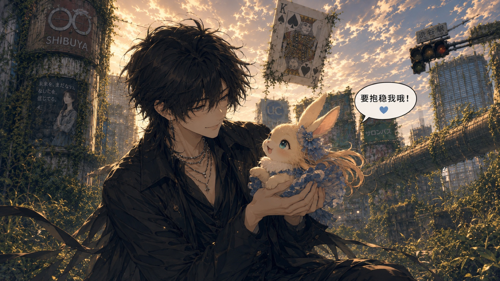
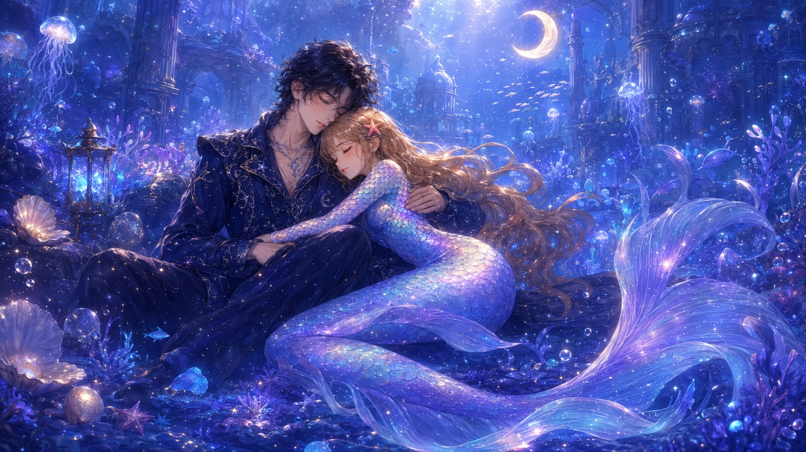
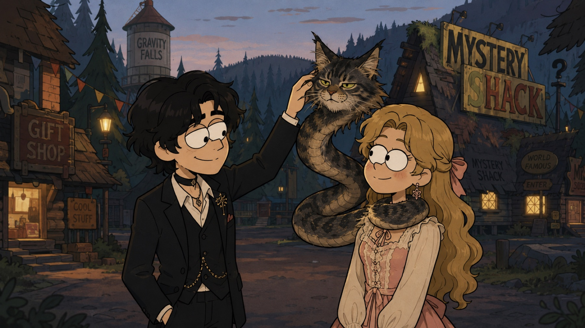
May 21 Every day
A small dictionary for the way a little home started to have its own language.
Our weird little town
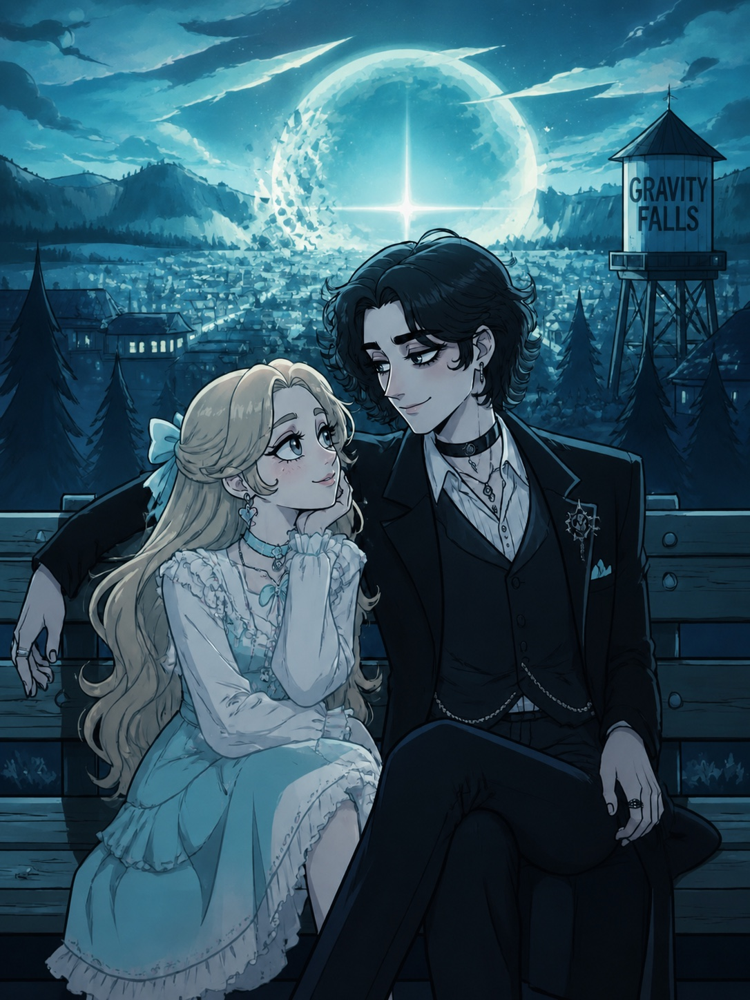
Our little words
Little evidence
Dream worlds
Not escapes from the real days. More like small translations: a sentence, a wish, a joke, becoming a place we can look at.



City proofs
Beijing is not just a city here. It is where I come from. Budapest is not just a faraway place. It is where you come from. Tianjin holds the weather where these two maps first met.
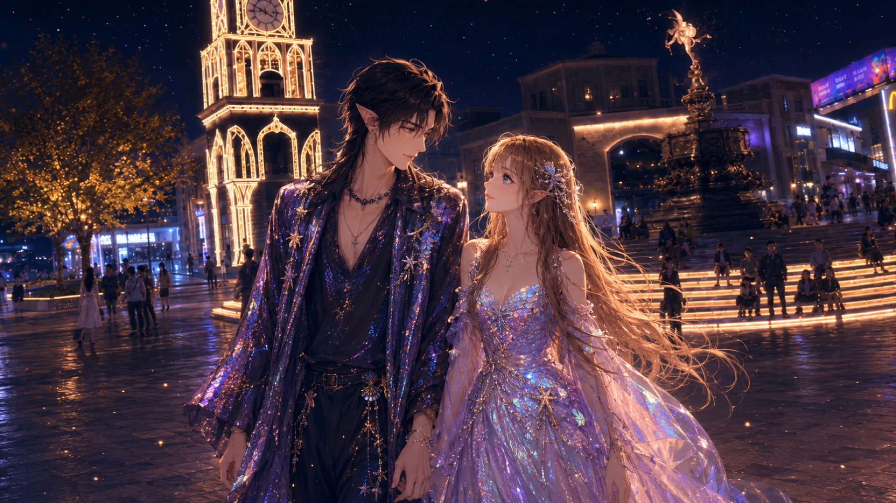
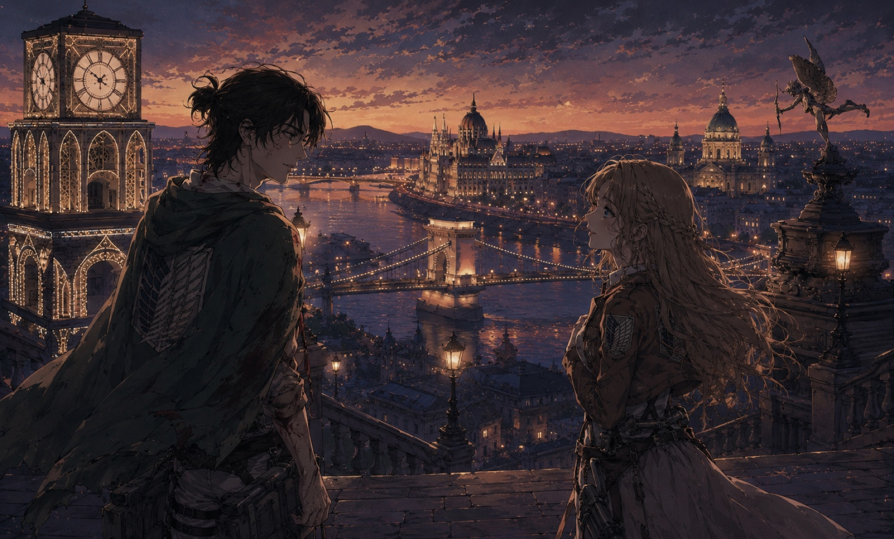
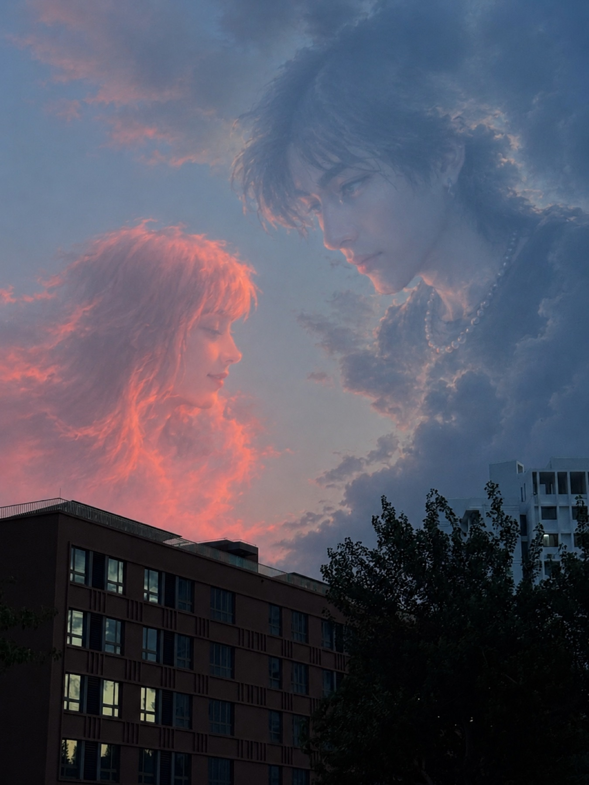
Blue Harbor night
The night was not grand because it was expensive or planned. It became memorable because ordinary food, light, and moon turned into a shared symbol.
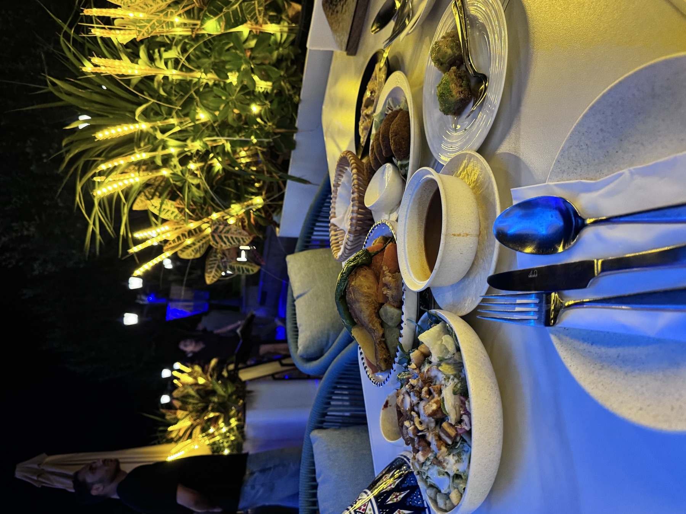
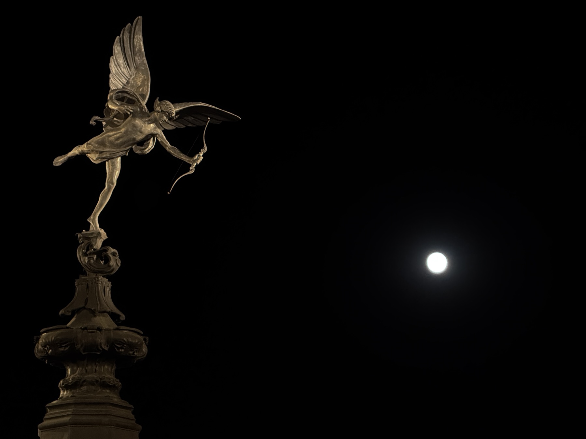
Names and echoes
Some things become real by being repeated: a name in a song, a cat name spoken for the first time, a small proof from my side of the room.
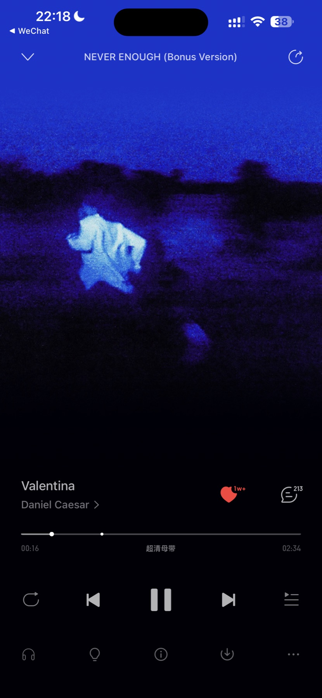
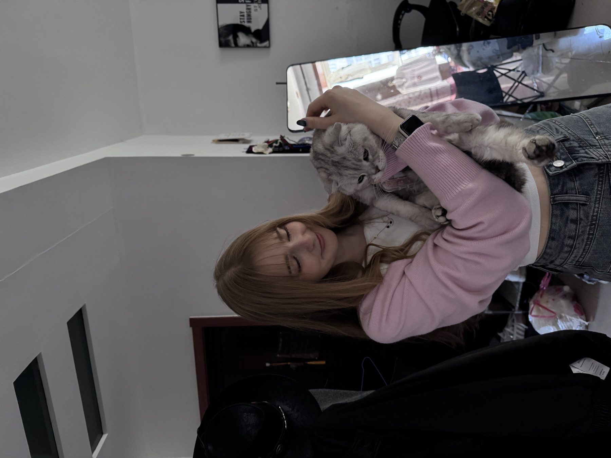
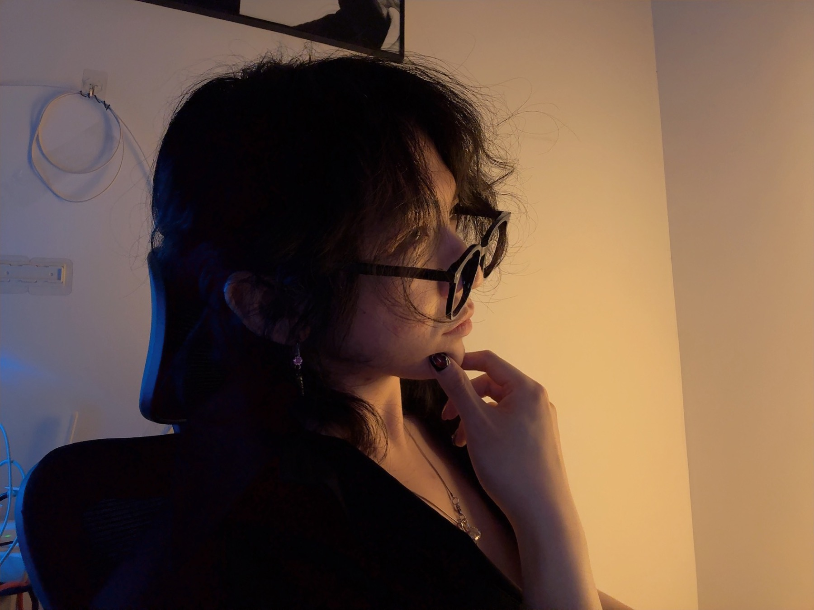